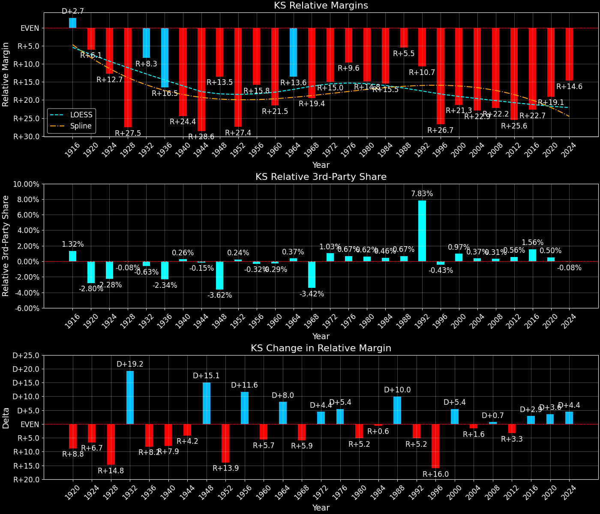

Kansas (KS) — Statewide
Margins · 3rd-Party share · Pres. deltas

Relative margins · Relative 3rd-Party · Rel. deltas
Kansas (KS) — Total Data
| Year | D | R | State Margin | Nat. Margin | Rel. Margin | Total votes | EVs |
|---|---|---|---|---|---|---|---|
| 1916 | 314,588(49.9%) | 277,658(44.1%) | D+5.9 | D+3.1 | D+2.7 | 629,813 | 10 |
| 1920 | 185,464(32.5%)(Δ -129,124) | 369,268(64.7%)(Δ 91,610) | R+32.2(Δ R+38.1) | R+26.2(Δ R+29.3) | R+6.1(Δ R+8.8) | 570,318(Δ -59,495) | 10 |
| 1924 | 156,319(23.6%)(Δ -29,145) | 407,671(61.5%)(Δ 38,403) | R+37.9(Δ R+5.7) | R+25.2(Δ D+1.0) | R+12.7(Δ R+6.7) | 662,454(Δ 92,136) | 10 |
| 1928 | 193,003(27.1%)(Δ 36,684) | 513,672(72.0%)(Δ 106,001) | R+45.0(Δ R+7.0) | R+17.4(Δ D+7.8) | R+27.5(Δ R+14.8) | 713,200(Δ 50,746) | 10 |
| 1932 | 424,204(53.6%)(Δ 231,201) | 349,498(44.1%)(Δ -164,174) | D+9.4(Δ D+54.4) | D+17.8(Δ D+35.2) | R+8.3(Δ D+19.2) | 791,978(Δ 78,778) | 9 |
| 1936 | 464,520(53.7%)(Δ 40,316) | 397,727(46.0%)(Δ 48,229) | D+7.7(Δ R+1.7) | D+24.3(Δ D+6.5) | R+16.5(Δ R+8.2) | 865,014(Δ 73,036) | 9 |
| 1940 | 364,725(42.4%)(Δ -99,795) | 489,169(56.9%)(Δ 91,442) | R+14.5(Δ R+22.2) | D+10.0(Δ R+14.3) | R+24.4(Δ R+7.9) | 860,297(Δ -4,717) | 9 |
| 1944 | 287,458(39.2%)(Δ -77,267) | 442,096(60.2%)(Δ -47,073) | R+21.1(Δ R+6.6) | D+7.5(Δ R+2.5) | R+28.6(Δ R+4.2) | 733,776(Δ -126,521) | 8 |
| 1948 | 351,902(44.6%)(Δ 64,444) | 423,039(53.6%)(Δ -19,057) | R+9.0(Δ D+12.1) | D+4.5(Δ R+3.0) | R+13.5(Δ D+15.1) | 788,819(Δ 55,043) | 8 |
| 1952 | 273,296(30.5%)(Δ -78,606) | 616,302(68.8%)(Δ 193,263) | R+38.3(Δ R+29.3) | R+10.9(Δ R+15.3) | R+27.4(Δ R+13.9) | 896,166(Δ 107,347) | 8 |
| 1956 | 296,317(34.2%)(Δ 23,021) | 566,878(65.4%)(Δ -49,424) | R+31.2(Δ D+7.0) | R+15.4(Δ R+4.5) | R+15.8(Δ D+11.6) | 866,243(Δ -29,923) | 8 |
| 1960 | 363,213(39.1%)(Δ 66,896) | 561,474(60.4%)(Δ -5,404) | R+21.3(Δ D+9.9) | D+0.2(Δ D+15.6) | R+21.5(Δ R+5.7) | 928,825(Δ 62,582) | 8 |
| 1964 | 464,028(54.1%)(Δ 100,815) | 386,579(45.1%)(Δ -174,895) | D+9.0(Δ D+30.4) | D+22.6(Δ D+22.4) | R+13.6(Δ D+8.0) | 857,901(Δ -70,924) | 7 |
| 1968 | 302,996(34.7%)(Δ -161,032) | 478,674(54.8%)(Δ 92,095) | R+20.1(Δ R+29.2) | R+0.7(Δ R+23.3) | R+19.4(Δ R+5.9) | 872,783(Δ 14,882) | 7 |
| 1972 | 270,287(29.5%)(Δ -32,709) | 619,812(67.7%)(Δ 141,138) | R+38.2(Δ R+18.0) | R+23.1(Δ R+22.4) | R+15.0(Δ D+4.4) | 916,095(Δ 43,312) | 7 |
| 1976 | 430,421(44.9%)(Δ 160,134) | 502,752(52.5%)(Δ -117,060) | R+7.6(Δ D+30.6) | D+2.1(Δ D+25.2) | R+9.6(Δ D+5.4) | 957,845(Δ 41,750) | 7 |
| 1980 | 326,150(33.3%)(Δ -104,271) | 566,812(57.9%)(Δ 64,060) | R+24.6(Δ R+17.0) | R+9.7(Δ R+11.8) | R+14.8(Δ R+5.2) | 979,795(Δ 21,950) | 7 |
| 1984 | 333,149(32.6%)(Δ 6,999) | 677,296(66.3%)(Δ 110,484) | R+33.7(Δ R+9.1) | R+18.2(Δ R+8.5) | R+15.5(Δ R+0.6) | 1,021,991(Δ 42,196) | 7 |
| 1988 | 422,636(42.6%)(Δ 89,487) | 554,049(55.8%)(Δ -123,247) | R+13.2(Δ D+20.4) | R+7.7(Δ D+10.5) | R+5.5(Δ D+10.0) | 993,044(Δ -28,947) | 7 |
| 1992 | 390,434(33.7%)(Δ -32,202) | 449,951(38.9%)(Δ -104,098) | R+5.1(Δ D+8.1) | D+5.6(Δ D+13.3) | R+10.7(Δ R+5.2) | 1,157,236(Δ 164,192) | 6 |
| 1996 | 387,659(36.1%)(Δ -2,775) | 583,245(54.3%)(Δ 133,294) | R+18.2(Δ R+13.1) | D+8.5(Δ D+3.0) | R+26.7(Δ R+16.0) | 1,074,300(Δ -82,936) | 6 |
| 2000 | 399,276(37.2%)(Δ 11,617) | 622,332(58.0%)(Δ 39,087) | R+20.8(Δ R+2.6) | D+0.5(Δ R+8.0) | R+21.3(Δ D+5.4) | 1,072,218(Δ -2,082) | 6 |
| 2004 | 434,993(36.6%)(Δ 35,717) | 736,456(62.0%)(Δ 114,124) | R+25.4(Δ R+4.6) | R+2.5(Δ R+3.0) | R+22.9(Δ R+1.6) | 1,187,756(Δ 115,538) | 6 |
| 2008 | 514,765(41.7%)(Δ 79,772) | 699,655(56.6%)(Δ -36,801) | R+15.0(Δ D+10.4) | D+7.3(Δ D+9.7) | R+22.2(Δ D+0.7) | 1,235,872(Δ 48,116) | 6 |
| 2012 | 440,726(38.0%)(Δ -74,039) | 692,634(59.7%)(Δ -7,021) | R+21.7(Δ R+6.8) | D+3.9(Δ R+3.4) | R+25.6(Δ R+3.3) | 1,159,971(Δ -75,901) | 6 |
| 2016 | 427,005(36.1%)(Δ -13,721) | 671,018(56.7%)(Δ -21,616) | R+20.6(Δ D+1.1) | D+2.1(Δ R+1.8) | R+22.7(Δ D+2.9) | 1,184,402(Δ 24,431) | 6 |
| 2020 | 570,323(41.5%)(Δ 143,318) | 771,406(56.1%)(Δ 100,388) | R+14.6(Δ D+6.0) | D+4.5(Δ D+2.4) | R+19.1(Δ D+3.6) | 1,373,986(Δ 189,584) | 6 |
| 2024 | 544,853(41.0%)(Δ -25,470) | 758,802(57.2%)(Δ -12,604) | R+16.1(Δ R+1.5) | R+1.5(Δ R+5.9) | R+14.6(Δ D+4.4) | 1,327,591(Δ -46,395) | 6 |
Column explanations
- Δ
- Change (delta) in the value from the previous election year.
- Year
- Election year.
- D
- Number of votes for the Democratic candidate (raw count(pct%)).
- R
- Number of votes for the Republican candidate (raw count(pct%)).
- State Margin
- Margin between the two major-party candidates, including third-party votes ((D - R)/total).
- Nat. Margin
- The national presidential margin for that year, including third-party votes ((D_total - R_total)/total_votes).
- Rel. Margin
- The presidential margin relative to the national presidential margin (Margin - Nat. Margin).
- Total votes
- Total voter turnout or ballots cast (when provided).
- EVs
- Number of electoral votes allocated to this state or unit.
Kansas (KS) — Third-Party Data
| Year | D | R | Other votes | State 3rd-Party Share | 3rd-Party Nat. Share | 3rd-Party Rel. Share |
|---|---|---|---|---|---|---|
| 1916 | 314,588(49.9%) | 277,658(44.1%) | 37,567(6.0%) | 5.96% | 4.64% | 1.32% |
| 1920 | 185,464(32.5%)(Δ -129,124) | 369,268(64.7%)(Δ 91,610) | 15,586(2.7%) | 2.73% | 5.53% | -2.80% |
| 1924 | 156,319(23.6%)(Δ -29,145) | 407,671(61.5%)(Δ 38,403) | 98,464(14.9%) | 14.86% | 17.14% | -2.28% |
| 1928 | 193,003(27.1%)(Δ 36,684) | 513,672(72.0%)(Δ 106,001) | 6,525(0.9%) | 0.91% | 0.99% | -0.08% |
| 1932 | 424,204(53.6%)(Δ 231,201) | 349,498(44.1%)(Δ -164,174) | 18,276(2.3%) | 2.31% | 2.94% | -0.63% |
| 1936 | 464,520(53.7%)(Δ 40,316) | 397,727(46.0%)(Δ 48,229) | 2,767(0.3%) | 0.32% | 2.66% | -2.34% |
| 1940 | 364,725(42.4%)(Δ -99,795) | 489,169(56.9%)(Δ 91,442) | 6,403(0.7%) | 0.74% | 0.48% | 0.26% |
| 1944 | 287,458(39.2%)(Δ -77,267) | 442,096(60.2%)(Δ -47,073) | 4,222(0.6%) | 0.58% | 0.72% | -0.15% |
| 1948 | 351,902(44.6%)(Δ 64,444) | 423,039(53.6%)(Δ -19,057) | 13,878(1.8%) | 1.76% | 5.38% | -3.62% |
| 1952 | 273,296(30.5%)(Δ -78,606) | 616,302(68.8%)(Δ 193,263) | 6,568(0.7%) | 0.73% | 0.49% | 0.24% |
| 1956 | 296,317(34.2%)(Δ 23,021) | 566,878(65.4%)(Δ -49,424) | 3,048(0.4%) | 0.35% | 0.67% | -0.32% |
| 1960 | 363,213(39.1%)(Δ 66,896) | 561,474(60.4%)(Δ -5,404) | 4,138(0.4%) | 0.45% | 0.73% | -0.29% |
| 1964 | 464,028(54.1%)(Δ 100,815) | 386,579(45.1%)(Δ -174,895) | 7,294(0.9%) | 0.85% | 0.48% | 0.37% |
| 1968 | 302,996(34.7%)(Δ -161,032) | 478,674(54.8%)(Δ 92,095) | 91,113(10.4%) | 10.44% | 13.86% | -3.42% |
| 1972 | 270,287(29.5%)(Δ -32,709) | 619,812(67.7%)(Δ 141,138) | 25,996(2.8%) | 2.84% | 1.80% | 1.03% |
| 1976 | 430,421(44.9%)(Δ 160,134) | 502,752(52.5%)(Δ -117,060) | 24,672(2.6%) | 2.58% | 1.90% | 0.67% |
| 1980 | 326,150(33.3%)(Δ -104,271) | 566,812(57.9%)(Δ 64,060) | 86,833(8.9%) | 8.86% | 8.24% | 0.62% |
| 1984 | 333,149(32.6%)(Δ 6,999) | 677,296(66.3%)(Δ 110,484) | 11,546(1.1%) | 1.13% | 0.67% | 0.46% |
| 1988 | 422,636(42.6%)(Δ 89,487) | 554,049(55.8%)(Δ -123,247) | 16,359(1.6%) | 1.65% | 0.98% | 0.67% |
| 1992 | 390,434(33.7%)(Δ -32,202) | 449,951(38.9%)(Δ -104,098) | 316,851(27.4%) | 27.38% | 19.55% | 7.83% |
| 1996 | 387,659(36.1%)(Δ -2,775) | 583,245(54.3%)(Δ 133,294) | 103,396(9.6%) | 9.62% | 10.05% | -0.43% |
| 2000 | 399,276(37.2%)(Δ 11,617) | 622,332(58.0%)(Δ 39,087) | 50,610(4.7%) | 4.72% | 3.75% | 0.97% |
| 2004 | 434,993(36.6%)(Δ 35,717) | 736,456(62.0%)(Δ 114,124) | 16,307(1.4%) | 1.37% | 1.00% | 0.37% |
| 2008 | 514,765(41.7%)(Δ 79,772) | 699,655(56.6%)(Δ -36,801) | 21,452(1.7%) | 1.74% | 1.42% | 0.31% |
| 2012 | 440,726(38.0%)(Δ -74,039) | 692,634(59.7%)(Δ -7,021) | 26,611(2.3%) | 2.29% | 1.73% | 0.56% |
| 2016 | 427,005(36.1%)(Δ -13,721) | 671,018(56.7%)(Δ -21,616) | 86,379(7.3%) | 7.29% | 5.73% | 1.56% |
| 2020 | 570,323(41.5%)(Δ 143,318) | 771,406(56.1%)(Δ 100,388) | 32,257(2.3%) | 2.35% | 1.84% | 0.50% |
| 2024 | 544,853(41.0%)(Δ -25,470) | 758,802(57.2%)(Δ -12,604) | 23,936(1.8%) | 1.80% | 1.88% | -0.08% |
Column explanations
- Year
- Election year.
- D
- Number of votes for the Democratic candidate (raw count(pct%)).
- R
- Number of votes for the Republican candidate (raw count(pct%)).
- Other votes
- Number of votes for third-party (other) candidates (raw count(pct%)).
- State 3rd-Party Share
- Share of the vote received by third-party (other) candidates.
- 3rd-Party Nat. Share
- The national third-party share for that year (3rd-Party votes / total votes).
- 3rd-Party Rel. Share
- Third-party share relative to the national third-party share (3rd-Party share - Nat. 3rd-Party share).

Two-party margins · relative · deltas
Kansas (KS) — Two-Party Data
| Year | D | R | 2-Party Margin | 2-Party Nat. Margin | 2-Party Rel. Margin | EVs |
|---|---|---|---|---|---|---|
| 1916 | 314,588(53.1%) | 277,658(46.9%) | D+6.2 | D+3.3 | D+3.0 | 10 |
| 1920 | 185,464(33.4%)(Δ -129,124) | 369,268(66.6%)(Δ 91,610) | R+33.1(Δ R+39.4) | R+27.7(Δ R+31.0) | R+5.4(Δ R+8.4) | 10 |
| 1924 | 156,319(27.7%)(Δ -29,145) | 407,671(72.3%)(Δ 38,403) | R+44.6(Δ R+11.4) | R+30.4(Δ R+2.7) | R+14.1(Δ R+8.7) | 10 |
| 1928 | 193,003(27.3%)(Δ 36,684) | 513,672(72.7%)(Δ 106,001) | R+45.4(Δ R+0.8) | R+17.6(Δ D+12.8) | R+27.8(Δ R+13.7) | 10 |
| 1932 | 424,204(54.8%)(Δ 231,201) | 349,498(45.2%)(Δ -164,174) | D+9.7(Δ D+55.0) | D+18.3(Δ D+35.9) | R+8.6(Δ D+19.1) | 9 |
| 1936 | 464,520(53.9%)(Δ 40,316) | 397,727(46.1%)(Δ 48,229) | D+7.7(Δ R+1.9) | D+24.9(Δ D+6.6) | R+17.2(Δ R+8.5) | 9 |
| 1940 | 364,725(42.7%)(Δ -99,795) | 489,169(57.3%)(Δ 91,442) | R+14.6(Δ R+22.3) | D+10.0(Δ R+14.9) | R+24.6(Δ R+7.4) | 9 |
| 1944 | 287,458(39.4%)(Δ -77,267) | 442,096(60.6%)(Δ -47,073) | R+21.2(Δ R+6.6) | D+7.5(Δ R+2.5) | R+28.7(Δ R+4.2) | 8 |
| 1948 | 351,902(45.4%)(Δ 64,444) | 423,039(54.6%)(Δ -19,057) | R+9.2(Δ D+12.0) | D+4.7(Δ R+2.8) | R+13.9(Δ D+14.8) | 8 |
| 1952 | 273,296(30.7%)(Δ -78,606) | 616,302(69.3%)(Δ 193,263) | R+38.6(Δ R+29.4) | R+10.9(Δ R+15.6) | R+27.7(Δ R+13.7) | 8 |
| 1956 | 296,317(34.3%)(Δ 23,021) | 566,878(65.7%)(Δ -49,424) | R+31.3(Δ D+7.2) | R+15.5(Δ R+4.6) | R+15.8(Δ D+11.8) | 8 |
| 1960 | 363,213(39.3%)(Δ 66,896) | 561,474(60.7%)(Δ -5,404) | R+21.4(Δ D+9.9) | D+0.2(Δ D+15.7) | R+21.6(Δ R+5.8) | 8 |
| 1964 | 464,028(54.6%)(Δ 100,815) | 386,579(45.4%)(Δ -174,895) | D+9.1(Δ D+30.5) | D+22.7(Δ D+22.5) | R+13.6(Δ D+8.0) | 7 |
| 1968 | 302,996(38.8%)(Δ -161,032) | 478,674(61.2%)(Δ 92,095) | R+22.5(Δ R+31.6) | R+0.8(Δ R+23.5) | R+21.7(Δ R+8.1) | 7 |
| 1972 | 270,287(30.4%)(Δ -32,709) | 619,812(69.6%)(Δ 141,138) | R+39.3(Δ R+16.8) | R+23.6(Δ R+22.8) | R+15.7(Δ D+6.0) | 7 |
| 1976 | 430,421(46.1%)(Δ 160,134) | 502,752(53.9%)(Δ -117,060) | R+7.8(Δ D+31.5) | D+2.1(Δ D+25.7) | R+9.9(Δ D+5.8) | 7 |
| 1980 | 326,150(36.5%)(Δ -104,271) | 566,812(63.5%)(Δ 64,060) | R+27.0(Δ R+19.2) | R+10.6(Δ R+12.7) | R+16.3(Δ R+6.5) | 7 |
| 1984 | 333,149(33.0%)(Δ 6,999) | 677,296(67.0%)(Δ 110,484) | R+34.1(Δ R+7.1) | R+18.3(Δ R+7.7) | R+15.7(Δ D+0.6) | 7 |
| 1988 | 422,636(43.3%)(Δ 89,487) | 554,049(56.7%)(Δ -123,247) | R+13.5(Δ D+20.6) | R+7.8(Δ D+10.5) | R+5.7(Δ D+10.1) | 7 |
| 1992 | 390,434(46.5%)(Δ -32,202) | 449,951(53.5%)(Δ -104,098) | R+7.1(Δ D+6.4) | D+6.9(Δ D+14.7) | R+14.0(Δ R+8.3) | 6 |
| 1996 | 387,659(39.9%)(Δ -2,775) | 583,245(60.1%)(Δ 133,294) | R+20.1(Δ R+13.1) | D+9.5(Δ D+2.6) | R+29.6(Δ R+15.6) | 6 |
| 2000 | 399,276(39.1%)(Δ 11,617) | 622,332(60.9%)(Δ 39,087) | R+21.8(Δ R+1.7) | D+0.5(Δ R+8.9) | R+22.4(Δ D+7.2) | 6 |
| 2004 | 434,993(37.1%)(Δ 35,717) | 736,456(62.9%)(Δ 114,124) | R+25.7(Δ R+3.9) | R+2.5(Δ R+3.0) | R+23.2(Δ R+0.9) | 6 |
| 2008 | 514,765(42.4%)(Δ 79,772) | 699,655(57.6%)(Δ -36,801) | R+15.2(Δ D+10.5) | D+7.4(Δ D+9.9) | R+22.6(Δ D+0.6) | 6 |
| 2012 | 440,726(38.9%)(Δ -74,039) | 692,634(61.1%)(Δ -7,021) | R+22.2(Δ R+7.0) | D+3.9(Δ R+3.4) | R+26.2(Δ R+3.6) | 6 |
| 2016 | 427,005(38.9%)(Δ -13,721) | 671,018(61.1%)(Δ -21,616) | R+22.2(Δ D+0.0) | D+2.2(Δ R+1.7) | R+24.4(Δ D+1.7) | 6 |
| 2020 | 570,323(42.5%)(Δ 143,318) | 771,406(57.5%)(Δ 100,388) | R+15.0(Δ D+7.2) | D+4.5(Δ D+2.3) | R+19.5(Δ D+4.9) | 6 |
| 2024 | 544,853(41.8%)(Δ -25,470) | 758,802(58.2%)(Δ -12,604) | R+16.4(Δ R+1.4) | R+1.5(Δ R+6.0) | R+14.9(Δ D+4.6) | 6 |
Column explanations
- Δ
- Change (delta) in the value from the previous election year.
- Year
- Election year.
- D
- Number of votes for the Democratic candidate (raw count(pct%)).
- R
- Number of votes for the Republican candidate (raw count(pct%)).
- 2-Party Margin
- Margin between the two major-party candidates, ignoring third-party votes ((D - R)/(D + R)).
- 2-Party Nat. Margin
- The national presidential margin for that year, including third-party votes ((D_total - R_total)/total_votes).
- 2-Party Rel. Margin
- The presidential margin relative to the national presidential margin (Margin - Nat. Margin).
- EVs
- Number of electoral votes allocated to this state or unit.